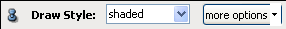
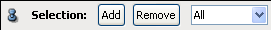

Ports
Draw Style

This port is inherited from the ViewBase class and therefore its description will be found there. In contrast to other modules derived from the ViewBase class this module does not provide the possibility to consider vertex and direct normals. The triangles will always be drawn flat.
Colormap

This port becomes visible only if a scalar field has been connected to the ColorField port. For further details see section Colormap.
Texture wrap

Selection

Color Mode
This port is available only on meshes with data located on cells. It allows you to change the color mapping of the data set on the geometry.
- Constant: Constant color.
- Average: Each cell is colored by a single color defined by the average value of its nodes.
- Mapping: Cell coloring is obtained through interpolation of its node values.
- Contouring: Each cell is colored relating to its node values and to isovalues between these values.
- Texturing: Same as Contouring but a texture is used for creating contours.